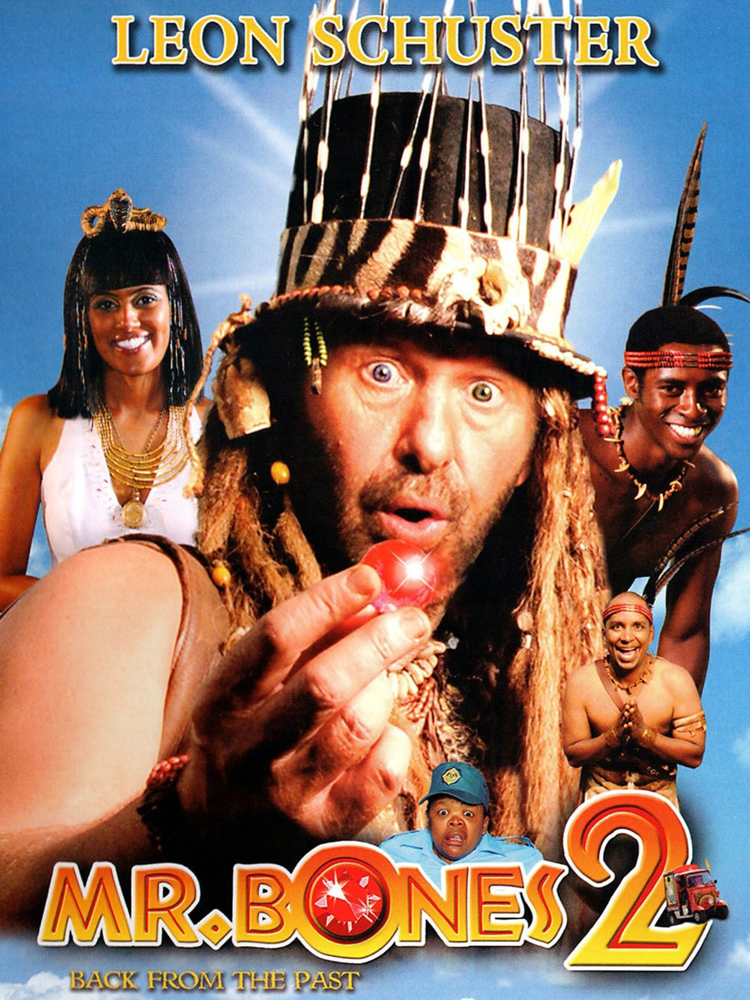

Directed by: Gray Hofmeyr
Written by:Leon Schuster
Gray Hofmeyr
Produced by Anant Singh
Helena Spring
Starring:Leon Schuster
Tongayi Chirisa
Leeanda Reddy
Kaseran Pillay
Meren Reddy
Keith Gengadoo
Gray Hofmeyr
Edited by:Johan Lategan
Music by Didi Kriel
Distributed by:Videovision Entertainment
Release date:
27 November 2008
Country:South Africa
Language English
Box office R70.8 million[1]
$ 4,918,688
MR BONE'S 2
It is the story of Hekule, the King of Kuvukiland who is given a gemstone by the dying Kunji Balanadin.It is up to Mr. Bones to cure his King and get rid of this cursed stone by travelling 130 years into the future, in the city of Durban. They meet a woman named Reshmi who gave them important clues to the gem and returning the gem to its home in an Indian fishing village named Ataram. Unfortunately, they must also contend with Reshmi's fiancé, who wants the gem for himself.